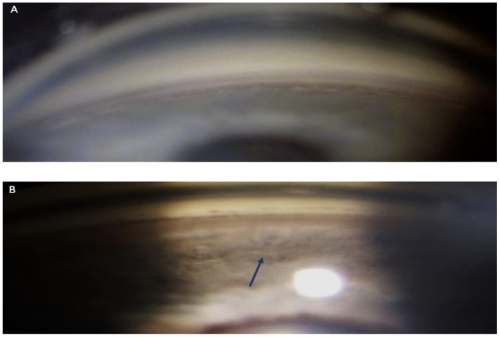

1962 — Rách thể mi chấn thương, góc rẽ (angle recession) và glôcôm góc rẽ / Traumatic angle recession and angle-recession glaucoma
Tags: pattern:rach-the-mi pattern:goc-re pattern:glaucome-thu-phat pattern:di-lech-dong-tu vung:the-mi vung:goc-tien-phong vung:mat protocol:gonioscopy protocol:AS-OCT protocol:UBM score:IOP
Mức chắc chắn (certainty): tổng hợp y văn (literature synthesis) — số liệu lấy từ một tổng quan + ca hai mắt sau túi khí (PMC10532958, có ảnh gonioscopy và AS-OCT), một loạt 9 mắt SLT (PMC11646445), một ca GATT (PMC13128977) và một ca Trabectome (PMC12143927). Không có RCT cho glôcôm góc rẽ; các khuyến cáo điều trị là tổng hợp loạt ca, chỗ suy luận được ghi rõ.
Câu chốt: Góc rẽ là di chứng giải phẫu để lại vĩnh viễn sau chấn thương đụng dập, nhưng chỉ 7–9% người có góc rẽ phát triển glôcôm (PMC10532958). Ba con số quyết định: (1) góc rẽ gặp ở 14,8% người trên 40 tuổi khi soi góc có hệ thống (146/983), và 23,5–100% ở mắt có máu tiền phòng sau chấn thương; (2) glôcôm xuất hiện hai đỉnh: trong 1 năm đầu (do giảm tiết thủy dịch che lấp, hết khi thể mi hồi phục) và nhiều năm sau — đỉnh muộn liên quan đến độ rộng vòng góc rẽ; (3) trên 276 mắt cắt bỏ sau chấn thương, khoảng cách chân mống mắt–gai củng mạc là 0,4 mm (bình thường 0,15 mm) — đó là “thước đo” của góc rẽ trên AS-OCT/UBM.
1. Tổng quan bệnh học – cơ chế hình ảnh (TẠI SAO)
1.1 Giải phẫu: vì sao rách đúng ở mặt phẳng giữa cơ thể mi
- Cơ thể mi (ciliary muscle) có hai bó chính: bó dọc (longitudinal) bám vào gai củng mạc (scleral spur) và bó vòng (circular); giữa hai bó là các sợi chéo (oblique fibers) — vùng mỏng nhất và là mặt phẳng tách tự nhiên khi có lực cắt.
- Chấn thương đụng dập gây biến dạng hành não–nhãn cầu theo đường trước–sau: xích đạo giãn ra, áp lực trong nhãn cầu tăng vọt, rồi “nảy” ngược — mô mềm nhất ở chân mống mắt chịu lực cắt lớn nhất → rách giữa bó dọc và bó vòng của thể mi. Vì vậy tổn thương không phải ở mống mắt, mà ở thể mi.
- Hệ quả mô học: teo bó vòng bị tách rời, xơ hóa lan tỏa vùng bè, và tắc nghẽn ống Schlemm (PMC10532958) → tăng trở lực thoát thủy dịch dù góc vẫn “mở”.
- Đo định lượng (276 mắt cắt bỏ sau chấn thương): chân mống mắt → gai củng mạc = 0,4 mm (bình thường 0,15 mm); mống mắt → đường Schwalbe = 0,7 mm (bình thường 0,25 mm) (PMC10532958). Đây là cơ sở để đo góc rẽ trên AS-OCT thay vì chỉ mô tả bằng mắt.
1.2 Vì sao nhãn áp có thể bình thường ngay sau chấn thương
- Sau đụng dập, thể mi bị “sốc” → giảm tiết thủy dịch; trở lực thoát đã tăng nhưng lưu lượng vào giảm, nên nhãn áp có thể bình thường hoặc thấp vài tuần đầu. Khi thể mi hồi phục tiết, nhãn áp mới tăng — đây là đỉnh sớm trong vòng 1 năm, có thể tạm thời và không tương quan với độ rộng góc rẽ.
- Đỉnh muộn xuất hiện nhiều năm sau, khi xơ hóa vùng bè tiến triển; đỉnh này liên quan đến độ rộng vòng (circumferential extent) và độ sâu của vết rách (PMC10532958). Vì vậy theo dõi nhãn áp suốt đời là bắt buộc, kể cả khi nhãn áp lúc ra viện bình thường.
1.3 Dấu hiệu soi góc (gonioscopy) — “bản đồ” của góc rẽ
- Đặc điểm chính: chân mống mắt bị đẩy ra sau, dải thể mi lộ rộng (exposed ciliary band), góc mở rộng bất thường so với mắt bên.
- Dấu hiệu phụ: dải thể mi sẫm màu và rộng hơn mắt đối diện; đồng tử giãn không đều từng vùng (sectorial mydriasis) do tổn thương sợi thần kinh đi qua thể mi tới cơ vòng đồng tử — một “gợi ý ngoài góc” rất giá trị.
- Phân độ (Mooney, theo mô tả soi góc):
| Độ | Mô tả soi góc |
|---|---|
| I | Rách nông; không thấy khe thể mi rõ; dải thể mi sẫm và rộng hơn mắt bên |
| II | Rách vừa; khe thể mi rõ; góc sâu hơn mắt bên do thể mi rách |
| III | Rách sâu; khe sâu vào thể mi, không xác định được đáy khe trên soi góc |
(Bảng phân độ theo PMC10532958, Table 3.)
2. Mẫu hình + chẩn đoán phân biệt theo thời điểm (gamut)
- Tăng nhãn áp SỚM (< 1 năm) sau chấn thương đụng dập: viêm bè–mống mắt (trabeculitis), vỡ bè (trabecular disruption), máu tiền phòng bít bè, xuất huyết hắc mạc ồ ạt, tổn thương hóa chất, glôcôm thể thủy tinh (lệch/phồng thể thủy tinh), dịch kính–hồng cầu (ghost cell) sớm, dị vật nội nhãn, bong võng mạc (hội chứng Schwartz).
- Tăng nhãn áp MUỘN (nhiều năm): góc rẽ (angle recession), dính góc trước (PAS), glôcôm tế bào hồng cầu (ghost cell), glôcôm thể thủy tinh, và đóng muộn của khe thể mi (cyclodialysis cleft).
- Hạ nhãn áp + tiền phòng nông + bong hắc mạc: khe thể mi (cyclodialysis cleft) — cơ chế ngược lại với góc rẽ; xem bài 1434 để không nhầm hướng điều trị.
3. Bảng so sánh phân biệt (ma trận đối chiếu)
| Thực thể (entity) | Hình ảnh điển hình (soi góc/AS-OCT/UBM) | Chốt vào (rule-in) | Chốt loại (rule-out) | Gợi ý xác nhận |
|---|---|---|---|---|
| Góc rẽ (angle recession) | Chân mống mắt lùi ra sau, dải thể mi lộ rộng, góc sâu hơn mắt bên; AS-OCT: khoảng cách chân mống mắt–gai củng mạc ≈ 0,4 mm | Dải thể mi lộ + góc sâu hơn mắt đối diện ở vùng có chấn thương | Góc đều hai mắt, dải thể mi không lộ | Soi góc hai mắt, 4 góc phần tư; AS-OCT/UBM đo |
| Iridodialysis (rách chân mống mắt) | Khuyết mống mắt hình chữ D, đồng tử méo về phía khuyết, thấy đáy mống mắt; góc hở thông với tiền phòng | Khuyết mống mắt + méo đồng tử | Mống mắt liên tục, chỉ có góc sâu | Soi góc, chụp tiền phòng; AS-OCT |
| Khe thể mi (cyclodialysis cleft) | Hạ nhãn áp (≤ 5 mmHg), tiền phòng nông, bong hắc mạc, nếp võng mạc; UBM thấy khe thông tiền phòng–khoang trên hắc mạc | Nhãn áp THẤP + bong hắc mạc + thấy khe | Nhãn áp cao/bình thường, không bong hắc mạc | UBM 50 MHz, AS-OCT; xem bài 1434 |
| Dính góc trước (PAS) | Mống mắt dính vào góc từng đoạn, góc đóng; thường sau máu tiền phòng/viêm kéo dài | Dính thực sự, không tách được khi ấn | Góc mở, không dính | Soi góc ấn (indentation); AS-OCT |
| Glôcôm tế bào hồng cầu (ghost cell) | Tế bào nhỏ, bạc màu lơ lửng tiền phòng, không viêm, nhãn áp tăng vài tuần–vài tháng sau xuất huyết dịch kính | Tế bào “bóng ma” + tiền sử xuất huyết dịch kính | Không có tế bào lơ lửng, góc rẽ đơn thuần | Soi sinh hiển vi, đếm tế bào tiền phòng; đối chiếu tiền sử xuất huyết dịch kính |
| Glôcôm thể thủy tinh | Thể thủy tinh phồng/lệch, tiền phòng nông không đều, có thể hạt thể thủy tinh | Bất thường thể thủy tinh + tăng nhãn áp | Thể thủy tinh trong, đúng vị trí | Sinh hiển vi, AS-OCT, siêu âm B |
| Viêm bè–mống mắt sau chấn thương | Tế bào/giả tế bào tiền phòng, dính góc non, nhãn áp tăng sớm | Viêm tiền phòng hoạt động | Không tế bào, không dính | Đáp ứng corticoid tại chỗ |
Dấu hiệu lâm sàng – hình ảnh phối hợp
- Máu tiền phòng (hyphema) là liên quan thường gặp nhất của góc rẽ; tỷ lệ góc rẽ ở mắt có máu tiền phòng rất thay đổi: 23,5% đến 71–100% tùy loạt (PMC10532958) — nghĩa là không có máu tiền phòng không loại trừ góc rẽ, và có máu tiền phòng phải soi góc khi hết máu.
- Chấn thương do túi khí (airbag) là cơ chế đang được báo cáo, có thể hai mắt; ca trong bài là nam 75 tuổi, tai nạn xe 22 năm trước, nhãn áp 35 mmHg phải / 25 mmHg trái, thị trường phải MD −12,29 dB (glôcôm tiến triển), mắt trái chỉ tăng nhãn áp (PMC10532958).
4. Protocol chụp + hệ phân độ/điểm chuẩn hóa
4.1 Thuật toán sau chấn thương đụng dập
flowchart TD
A[Chan thuong dung dap mat] --> B[Kham: thi luc, IOP, tien phong, dong tu]
B --> C{Co chong chi dinh soi goc?}
C -->|Sung giac mac / rach nhan cau| D[Hoan soi goc - dieu tri va theo doi IOP]
C -->|Khong| E[Soi goc 4 goc phan tu HAI MAT]
E --> F{Co goc re?}
F -->|Khong| G[Theo doi IOP 1 tuan, 1, 3, 6, 12 thang]
F -->|Co| H[Phan do Mooney I-III + do rong vong bang goc]
H --> I[AS-OCT / UBM do khoang chan mong mat-gai cung mac]
I --> J[Theo doi IOP suot doi + kham goc lai]
J --> K{IOP tang?}
K -->|Co| L[Thuoc ha IOP - tranh PGA giai doan som]
L --> M{Khac che?}
M -->|Khong| N[SLT / Trabectome / GATT / Trab + MMC]
- Soi góc (gonioscopy): là tiêu chuẩn vàng; dùng gương soi góc không ấn (non-indentation) để không làm sai lệch độ sâu, sau đó ấn (indentation) để phân biệt PAS thật với góc đóng giả. Soi cả hai mắt, đủ 4 góc phần tư — vì tổn thương có thể khu trú và vì góc rẽ hai bên gặp tới 2,1% (PMC10532958).
- AS-OCT tiền phòng (không tiếp xúc, không cần thuốc tê): đo mở góc (angle opening distance), độ rộng dải thể mi, và khoảng cách chân mống mắt–gai củng mạc; ưu điểm là đo được, lưu ảnh, so theo thời gian. UBM 50 MHz khi cần nhìn sau mống mắt/sau thể mi (khe thể mi, nang thể mi) — bổ trợ, không thay thế soi góc.
- Theo dõi nhãn áp: khám 1 tuần, 1, 3, 6, 12 tháng trong năm đầu, sau đó hằng năm suốt đời (đề xuất thực hành, không phải ngưỡng từ RCT); mỗi lần đo cả hai mắt và ghi nhãn áp nền để phát hiện đỉnh muộn.
- Đo thị trường/RNFL–GCL khi nhãn áp tăng hoặc khi nghi glôcôm — góc rẽ không bảo vệ gai thị.
4.2 Ngưỡng định lượng phải nhớ
| Thông số | Ngưỡng / giá trị | Ý nghĩa | Nguồn |
|---|---|---|---|
| Tỷ lệ góc rẽ khi soi góc có hệ thống | 14,8% (146/983 người > 40 tuổi) | Góc rẽ phổ biến hơn ta tưởng | PMC10532958 |
| Góc rẽ ở mắt có máu tiền phòng | 23,5% – 71–100% | Máu tiền phòng không dự báo chắc, nhưng buộc phải soi góc | PMC10532958 |
| Góc rẽ một bên / hai bên | ≤ 15,4% / ≤ 2,1% | Soi cả hai mắt | PMC10532958 |
| Nguy cơ glôcôm ở người có góc rẽ | 7–9% | Theo dõi dài hạn, không điều trị dự phòng | PMC10532958 |
| Khoảng chân mống mắt–gai củng mạc | 0,4 mm (bình thường 0,15 mm) | Thước đo góc rẽ | PMC10532958 |
| Mống mắt–Schwalbe | 0,7 mm (bình thường 0,25 mm) | Góc mở rộng bất thường | PMC10532958 |
| Nhãn áp trong ca hai mắt | 35 / 25 mmHg; MD −12,29 dB | Mức tăng và tổn thương thị trường | PMC10532958 |
| SLT ở glôcôm góc rẽ | Thành công 55,5% (5/9); IOP 20 → 16,83 mmHg ở 12 tháng | Lựa chọn ít xâm lấn trước | PMC11646445 |
| Trabeculectomy ở góc rẽ | Thành công 43% (so 74% ở POAG) | Kết quả kém hơn POAG; dùng MMC | PMC12143927 |
| Trabectome (ab interno) | Giảm IOP ~31%, về ~15 mmHg (gộp phân tích) | Lựa chọn khi muốn tránh bọng lọc | PMC12143927 |
| GATT (ca) | 12 mmHg không thuốc ở 12 tháng; góc rẽ 5 giờ đồng hồ | Lựa chọn ở người trẻ, góc rẽ khu trú | PMC13128977 |
4.3 Điều trị — thứ tự thực tế
- Nội khoa: thuốc ức chế beta, ức chế carbonic anhydrase, alpha-agonist; tránh prostaglandin (PGA) ngay sau chấn thương vì tác dụng tiền viêm (PMC10532958) — sau giai đoạn viêm có thể dùng lại.
- SLT: thành công 55,5% trong loạt 9 mắt, giảm nhãn áp khiêm tốn (20 → 16,83 mmHg) nhưng giảm số thuốc; có hiệu ứng đối bên (mắt không điều trị thành công 33,3%) (PMC11646445).
- Phẫu thuật: trabeculectomy + MMC (xơ hóa bọng lọc hay gặp ở mắt đã chấn thương); Trabectome (ab interno, tránh bọng lọc, giảm ~31% IOP); GATT ở góc rẽ khu trú; ống dẫn lưu khi thất bại nhiều lần.
- Luôn nhớ: điều trị glôcôm, không điều trị “góc rẽ” — góc rẽ không hồi phục và không cần can thiệp nếu nhãn áp bình thường.
5. Biến thể bình thường và cạm bẫy
- Dải thể mi rộng sinh lý ở mắt cận thị cao, người trẻ — phải so mắt đối diện và tìm dấu hiệu chấn thương kèm theo (máu tiền phòng cũ, iridodialysis, đục thể thủy tinh khu trú, sẹo giác mạc).
- Máu tiền phòng che góc: soi góc khi máu đã tan, không kết luận “góc bình thường” trong lúc còn máu; phù giác mạc cũng làm mờ góc — chờ hoặc dùng AS-OCT.
- Giảm tiết thể mi che lấp tăng trở lực: nhãn áp bình thường sau chấn thương không loại trừ góc rẽ; đỉnh muộn có thể 10–20 năm sau.
- Nhầm iridodialysis với góc rẽ: iridodialysis có khuyết mống mắt + méo đồng tử; góc rẽ có mống mắt liên tục nhưng chân mống mắt lùi ra sau.
- Nhầm khe thể mi với góc rẽ: khe thể mi gây hạ nhãn áp và bong hắc mạc — hướng điều trị ngược (atropine, laser, cyclopexy), không phải hạ nhãn áp.
- Bỏ sót mắt thứ hai: góc rẽ hai bên tới 2,1%, thường do túi khí hoặc chấn thương lặp lại; luôn soi cả hai mắt và hỏi tiền sử chấn thương đầu/mặt.
- Kết luận “glôcôm góc mở nguyên phát” ở người trẻ có tăng nhãn áp một mắt: luôn soi góc trước khi gán nhãn POAG.
6. Tự lượng giá — Blind Quiz
Ca 1 — Nam 45 tuổi, mờ mắt sau chấn thương bóng

- Gợi ý lâm sàng: chấn thương đụng dập mắt phải 1 tháng trước, nhãn áp 28 mmHg, mắt trái 16 mmHg.
- Câu hỏi: (a) Mô tả khác biệt giữa hai ảnh A và B. (b) Dấu hiệu nào phân biệt với iridodialysis? (c) Bước tiếp theo cần làm?
Bấm để hiện đáp án (findings + chẩn đoán)
- Findings: (A) góc phía trên bình thường; (B) góc phía dưới sâu bất thường, dải thể mi lộ rộng (mũi tên) so với phía trên — góc rẽ khu trú vùng dưới.
- Chẩn đoán: góc rẽ sau chấn thương đụng dập; cần soi góc mắt trái để so sánh và đo AS-OCT.
- Vì sao: lực đụng dập làm rách mặt phẳng giữa bó dọc và bó vòng thể mi → chân mống mắt lùi ra sau, dải thể mi lộ; mống mắt vẫn liên tục nên không phải iridodialysis.
- Nguồn ảnh: Life 2023 — PMC10532958 — Figure 1 — CC BY 4.0.
Ca 2 — Cùng bệnh nhân, câu hỏi về “thước đo”

- Gợi ý lâm sàng: AS-OCT tiền phòng (Visante) mắt phải (A) và mắt trái (B).
- Câu hỏi: (a) Mũi tên chỉ cấu trúc nào? (b) Khoảng cách nào đo góc rẽ, và giá trị bình thường/ bệnh lý? (c) Vì sao nhãn áp có thể bình thường trong nhiều năm?
Bấm để hiện đáp án (findings + chẩn đoán)
- Findings: mũi tên chỉ chỗ góc mở rộng bất thường — chân mống mắt lùi ra sau, dải thể mi lộ; hình dạng góc không đối xứng với mắt bên.
- Số đo: khoảng chân mống mắt–gai củng mạc ≈ 0,4 mm ở mắt góc rẽ so với 0,15 mm bình thường; mống mắt–Schwalbe 0,7 mm so với 0,25 mm (276 mắt cắt bỏ sau chấn thương).
- Vì sao nhãn áp bình thường lâu: thể mi giảm tiết sau chấn thương che lấp tăng trở lực; khi hồi phục tiết mới tăng nhãn áp — đỉnh muộn nhiều năm sau, liên quan độ rộng vòng góc rẽ.
- Nguồn ảnh: Life 2023 — PMC10532958 — Figure 3 — CC BY 4.0.
Ca 3 — Bệnh nhân 30 tuổi, nhãn áp 30 mmHg một mắt, không tiền sử rõ
- Gợi ý lâm sàng: nam 30 tuổi, nhãn áp mắt phải 30 mmHg, mắt trái 15 mmHg; giác mạc trong, tiền phòng sâu, đồng tử phải giãn không đều từng vùng; không nhớ chấn thương.
- Câu hỏi: (a) Ba chẩn đoán phân biệt? (b) Dấu hiệu nào gợi ý góc rẽ? (c) Hai việc phải làm ngay trong buổi khám.
Bấm để hiện đáp án (findings + chẩn đoán)
- Chẩn đoán phân biệt: glôcôm góc rẽ, glôcôm góc mở nguyên phát, viêm bè–mống mắt/viêm tiền phòng, glôcôm thể thủy tinh, khe thể mi đóng muộn (nếu có tiền sử chấn thương).
- Gợi ý: giãn đồng tử từng vùng (sectorial mydriasis) do tổn thương sợi thần kinh qua thể mi; tăng nhãn áp một mắt ở người trẻ; tiền sử chấn thương có thể bị quên.
- Phải làm: (1) soi góc cả hai mắt, đủ 4 góc phần tư; (2) AS-OCT/UBM đo góc + chụp/ghi hình để theo dõi; sau đó khởi trị hạ nhãn áp (tránh PGA giai đoạn sớm) và hẹn theo dõi suốt đời.
- Nguồn: số liệu và dấu hiệu từ PMC10532958 (tổng quan + ca).
Bài liên quan chéo
- 1447 – Rách thể mi sau MIGS/Yamane
- 1434 – Hạ nhãn áp & khe thể mi (cyclodialysis cleft)
- 1444 – Viêm màng bồ đào sau chấn thương
- 1416 – Glôcôm do dầu silicone
- 1452 – Glôcôm do thể thủy tinh chưa mổ
- 449 – Chấn thương mắt do dị vật
- 412 – U trong nhãn cầu
Ảnh
- Tên file:
1962_goc-re_Gonioscopy_PMC10532958.jpg,1962_goc-re_ASOCT_PMC10532958.jpg. Nguồn + giấy phép từng ảnh:images/CREDITS.md. - Cả hai ảnh CC BY 4.0, dùng nguyên bản, không crop/ghép; ảnh soi góc giữ nguyên độ mờ của bản gốc để trung thực nguồn.
Không dùng để chẩn đoán độc lập khi chưa có người hướng dẫn.